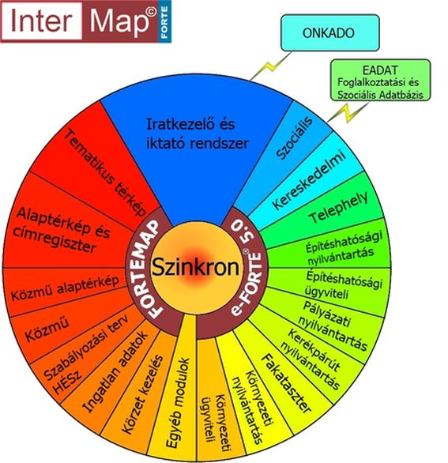

|
Tisztelt Döntéshozó! Előfordult már Önöknél: - hogy az Iktató és más modulok adatai nincsenek szinkronban egymással?
- többször kellett ugyanazon adatot rögzíteni?
- különböző rendszerekben tárolt adatok kellett hosszadalmasan egyeztetni?
- a központi adatszolgáltatást rohammunkában kellett elkészíteni?
Ha igen akkor szeretném figyelmébe ajánlani az InterMap Kft. új termékeit és szolgáltatásait, amelyek egy szinkronizált rendszert alkotva lefedik a Hivatali ügyintézés egy jelentős részét.  A FORTE® integrált önkormányzati rendszer felépítése Rendszereink hatékonyan támogatják a Hivatal ügyviteli folyamatait, egyszerűbbé és teljes körűvé teszik az adminisztrációt, valamint elősegítik a mindennapi munka átláthatóságát, de emellett maximálisan megfelelnek a vonatkozó jogszabályi környezetnek. Ajánlott szoftvereink mindegyike Web alapú, interneten keresztül elérhető (ASP) alkalmazás. Ez a technológia lehetővé teszi, hogy az Ön számára rendkívül kedvező áron, hardver beszerzés nélkül, teljesen testre szabott alkalmazásokat szállítsunk úgy, hogy akár nem terheljük a Hivatal költségvetését a szoftverek megvásárlásának költségével. Az alábbi ügyviteli rendszereket, akár havi díjas szolgáltatás keretén belül is biztosítjuk, ügyelve arra, hogy partnereinknek, a magas szintű rendelkezésre állás mellett, folyamatos támogatást és segítséget nyújtsunk, a napi munkában. e-FORTE® 5.0 Ügyiratkezelő Rendszer A Hivatal iratkezelési folyamatainak teljes körű támogatását látja el. Az általános ügyirat kezelési funkcionalitás mellett rendszerünk kiterjedt dokumentumkezelési funkcionalitást is biztosít. Ügyfeleink hatékony munkavégzését támogatja az ONKADO szinkron, amellyel az adóügyi iratok tömeges iktatása valósulhat meg. Bővebben... e-FORTE® 5.0 Ügyiratkezelő Rendszer ONKADO szinkron Az iratkezelő rendszer és az elterjedt adóügyi rendszer közötti kétirányú kapcsolat lehetővé teszi, hogy az ONKADO-ban nyilvántartott ügyek egy gombnyomásra iktatásra kerüljenek. Bővebben... e-FORTE® 5.0 Fa kataszter modul A település teljes közterületi faállományának nyilvántartására szolgáló rendszer, amellyel lehetővé teszi a fákhoz kapcsolódó adatok teljes körű kezelését. Az alkalmazás segítségével folyamatosan naprakész információkat kaphatunk a fák állapotáról, a fa fenntartás költségeiről, valamint az elvégzett és elvégzendő munkálatokról. A nyilvántartáshoz térképes kapcsolatot és PDA-s helyszíni ügyintézési támogatást is biztosítunk. Bővebben... e-FORTE® 5.0 Környezeti nyilvántartás modul A Megrendelő igénye szerint, a környezettel összefüggő elemek, vagy anomáliák (pl. illegális hulladéklerakások, parlagfű és egyéb gyomfertőzöttség, stb.) lakossági bejelentésére, valamint ezen bejelentések nyilvántartására szolgáló dinamikus rendszer, amelyben az intézkedések nyomon követhetők a hivatal munkatársai és igény szerint az érdeklődő nagyközönség számára is. A rendszer térinformatikai kapcsolattal rendelkezik. Bővebben... e-FORTE® 5.0 Környezeti ügyviteli modul Folyamat alapú ügyviteli rendszer, amely beépített intelligenciájával segíti az ügyintézés folyamatát. Az elvégzendő feladatok és eljárási cselekmények rendkívül könnyen áttekinthetőek a rendszerben, és segítik az ügy elintézésének tervezését. Pl. fakivágási ügyek kezelése. e-FORTE® 5.0 Építéshatósági modul Olyan folyamat alapú ügyviteli rendszer, amely beépített intelligenciájával az I. fokú építéshatósági munka teljes körű támogatására hivatott, támogatja az ügyintézés folyamatát, a kérelem beérkezésétől a jogerősítésig. Az elvégzendő feladatok és eljárási cselekmények rendkívül könnyen áttekinthetőek és segítik az ügy elintézésének tervezését. A Rendszer olyan határidő kezelő megoldást biztosít, amely minden ügyintézési állapotban jelzi az ügy elintézésének határnapját (figyelemmel a határidő nyugvására és megszakadására is), valamint az eljárásban részt vevő („belső" és „külső") résztvevők számára, az egyes cselekmények teljesítésére előírt határidő alakulását. Bővebben... e-FORTE® 5.0 Építéshatósági nyilvántartás modul Az Építéshatósági modul nélkül, külön funkcionalitásként is használható rendszer. A 255/2007. (X. 4.) Korm. rendelet alapján meghatározott adatok körének nyilvántartására és a hatósági statisztikák automatikus elkészítésére szolgáló megoldás. Az Építéshatósági modul és az Építéshatósági nyilvántartás modul együttműködésével a nyilvántartásba automatikusan szinkronizálódnak az adatok. Bővebben... e-FORTE® 5.0 Szociális modul A Szociális modul megoldja az ügyfelek, háztartások, támogatások nyilvántartását, kezeli az eseti és rendszeres segélyeket, elkészíti a kötelező MEP jelentést, KSH statisztikát, előállítja az ügyintézők munkáját megkönnyítő listákat. A Rendszer nyilvántartja a beérkezett kérelmeket, kezeli a kérelmek jóváhagyását, elutasítását, illetve megszüntetését, segít a jóváhagyott támogatások felülvizsgálatában, a támogatás adatainak módosításában, lehetőséget biztosít a visszafizetés folyamatának kezelésére, valamint megoldja a támogatások csoportos kifizetését és módosítását is. A rendszer kapcsolatot biztosít az EADAT felülethez. Bővebben...
e-FORTE® 5.0 Kereskedelmi modul A modul támogatja a működési engedélyek ügyintézéséhez kapcsolódó adatok kezelését, karbantartását, valamint alkalmas az eljárás összes cselekményének átlátható kezelésére. A nyilvántartásban szereplő adatok alapján a program automatikusan határozatot és működési engedélyt generál. Alkalmas a szükséges statisztikák és jelentések elkészítésére, valamint a működési engedélyek nyomtatására. e-FORTE® 5.0 Telephely modul A modul bevezetésével az önkormányzat telephely engedéllyel kapcsolatos nyilvántartási feladatai korszerűen, kényelmesen és gyorsan végezhetőek. A napi ügyviteli munka támogatásán, valamint a jogszabályi szabályozások teljesítésén túl a rendszer alkalmas a kötelező jelentések, valamint az egzakt statisztikák elkészítésére is. e-FORTE® 5.0 Pályázati nyilvántartás modul Az önkormányzat által megpályázott, vagy megpályázni kívánt projekteket nyilvántartó modul, amelyben kezelhetők a beadott és megnyert pályázatok adatai. FORTEMAP® 5.0 Alaptérkép és címregiszter modul A hivatalos digitális földhivatali alaptérkép gyors és tetszetős megjelenítését végzi. Külső érdeklődők számára is könnyen kezelhető, webes felületen teszi elérhetővé a publikálásra szánt térképi adatokat. Bővebben... FORTEMAP® 5.0 Közmű modul A Hivatal rendelkezésére álló közmű térképek megjelenítésére és a közmű adatok kezelésére szolgáló alkalmazás. A rendelkezésünkre bocsátott információk alapján egy jól rendszerezett és átlátható formában biztosítja a rendszer a víz, csatorna, gáz, elektro, telco, stb. közművekről elérhető térképi és egyéb adatokat. Bővebben... FORTEMAP® 5.0 Szabályozási terv modul A Szabályozási terv és a Helyi Építési Szabályzat megjelenítésére és kezelésére szolgáló alkalmazás. A rendelkezésünkre bocsátott térképi és egyéb szabályozási adatok térinformatikai feldolgozását követően, az alkalmazás a megfelelő rétegstruktúrában teszi elérhetővé és kereshetővé az egyes szabályozási adatokat. Bővebben... FORTEMAP® 5.0 Ingatlan adatok modul A modul használatával az ingatlanokhoz kapcsolódó adatok és információk kezelhetők, illetve jeleníthetők meg (akár fényképek is). Az adatok, a megfelelő jogosultsági szint beállítását követően publikálhatóak, így külső érdeklődők és a belső felhasználók eltérő adattartalmat láthatnak. Bővebben... FORTEMAP® 5.0 Körzetkezelés modul Az alkalmazás segítségével címek, vagy helyrajzi számok alapján körzeteket hozhatunk létre, jeleníthetünk meg. A modul kiválóan alkalmas a választási, parkoló, iskola, óvoda, körzetek kialakítására, kezelésére. Bővebben... FORTEMAP® 5.0 Tematikus térkép modul A rendszer varázslószerűen végigvezet a felhasználót a tematikus térképek készítésének folyamatán, így különösebb előképzettség nélkül is lehetőség van tetszetős, és bonyolult elemzéseken alapuló tematikus térképek készítésére, publikálására. A megoldás támogatja saját adatbázisok feldolgozását is. Bővebben... FORTEMAP® 5.0 Kerékpárút nyilvántartó modul A településen tulajdonában lévő kerékpárutak nyilvántartására szolgáló alkalmazás, amely a térképes megjelenítésen túl az egyes szakaszokhoz tartozó egyedi adatok, jelzések és tereptárgyak nyilvántartását biztosítja. Amennyiben felkeltettük érdeklődését, esetleg testre szabott árajánlatot vagy bővebb tájékoztatást szeretne, szolgáltatásainkkal, termékeinkkel kapcsolatban, az alábbi elérhetőségeinken keressen bizalommal! Tel: 06 1 212 2070 e.mail:
Ez a cím védelemre kerül a spamrobotok ellen, engedélyezze a Javascript használatát, hogy megtekinthesse
Tisztelettel: Nikl István ügyvezető igazgató ________________________ InterMap Kft.
|
 Hamarosan 4200 közintézménynek küld ki kérdőívet az Állami Számvevőszék, hogy felmérje és elemezze korrupciós kockázataikat. Megkérdezik, kaphatnak-e ajándékot a hivatalnokok, hogyan tarthatnak kapcsolatot politikusokkal, milyen ügyekben van mérlegelési lehetősége egy hatóságnak, és részletesen rákérdeznek arra is, mi a helyzet a közbeszerzésekkel. Az eredményeket térképen is ábrázolják, ahol később az állampolgár, a vállalkozó is megnézheti, a vele kapcsolatban álló hivatal mennyire biztonságos.
Hamarosan 4200 közintézménynek küld ki kérdőívet az Állami Számvevőszék, hogy felmérje és elemezze korrupciós kockázataikat. Megkérdezik, kaphatnak-e ajándékot a hivatalnokok, hogyan tarthatnak kapcsolatot politikusokkal, milyen ügyekben van mérlegelési lehetősége egy hatóságnak, és részletesen rákérdeznek arra is, mi a helyzet a közbeszerzésekkel. Az eredményeket térképen is ábrázolják, ahol később az állampolgár, a vállalkozó is megnézheti, a vele kapcsolatban álló hivatal mennyire biztonságos. 
{kind=link}